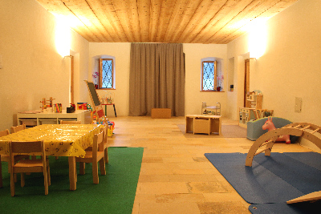

Freude, Staunen, Gemeinschaft
Kicherebsen
...sind geschmackvoll, kichern auch mal und springen dabei gerne.
Das wollen wir auch von ganzem Herzen, Spaß haben, lachen und uns
viel bewegen.
Kinder zwischen 18 Monaten und drei Jahren sind bei uns herzlich wilkommen!
Auf dieser Website können sie sich näher über unser Pädagogisches Konzept (Downloads) sowie die wichtigsten Infos informieren. Bei weiteren Fragen nehmen sie gerne Kontakt mit uns auf.